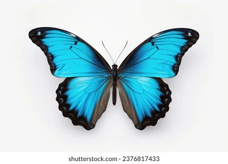

Blue Butterfly
The blue butterfly is one of the most beautiful insects in nature.
It is known for its bright and attractive blue wings.
There are different kinds of blue butterflies, and they can be found in many parts of the world.
They usually live in gardens, forests, meadows, and other places where there are many flowers and plants.
Blue butterflies have delicate wings covered with tiny scales. These scales give their wings their beautiful color.
Some blue butterflies have light blue wings, while others can have a darker or brighter blue color.
Their wings may also have small black, white, or brown patterns.
Blue butterflies feed mainly on nectar from flowers. They fly from one flower to another and help plants with pollination.
Butterflies are also an important part of nature because they provide food for some birds and other animals.
The life of a butterfly is very interesting. It begins as a small egg. Then it becomes a caterpillar, which eats leaves and grows.
After that, it changes into a pupa. Finally, an adult butterfly comes out with beautiful wings.This process is called metamorphosis.
Blue butterflies are a symbol of beauty, freedom, and peace. Watching a blue butterfly flying among flowers can make people feel calm and happy.
They are a wonderful part of nature and should be protect
